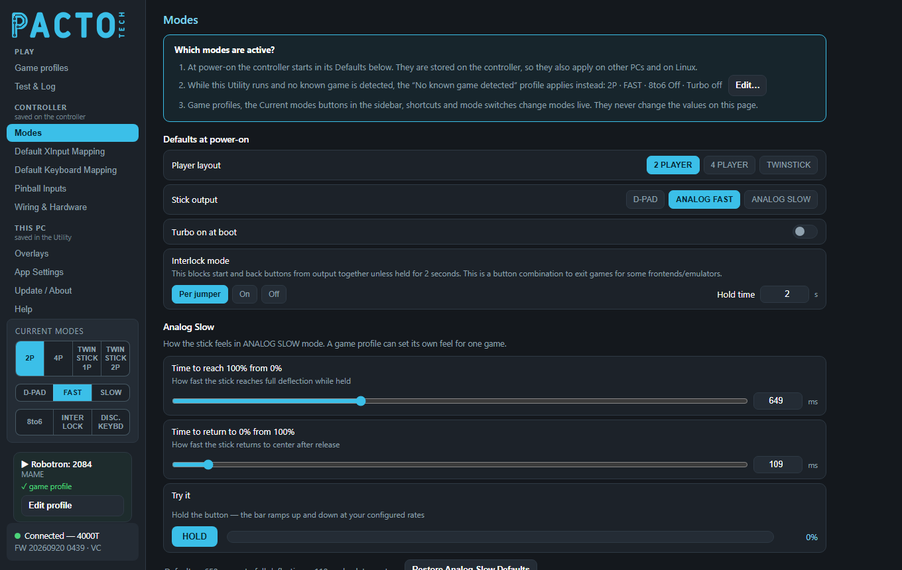
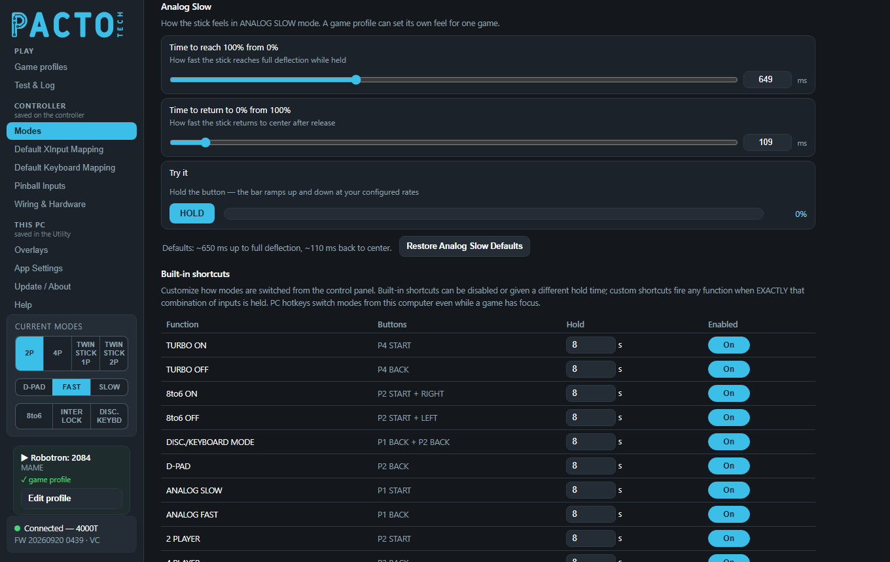
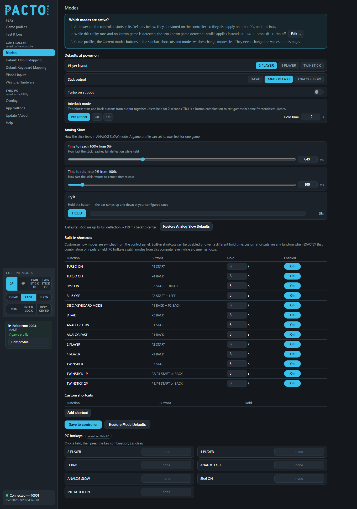

See which modes are active and why, choose how your board starts up, tune the Analog Slow stick feel, and set the button combos and PC keys that switch modes.

Modes is in the Controller group of the sidebar: its settings are stored on the board and only reach it when you press Save to controller at the bottom of the page. The one exception is PC hotkeys, which are saved on this PC. How the board's mode pins are wired (switches, jumpers, kiosk lock) is set on Wiring & Hardware.
The card at the top of the page explains the three things that decide the board's modes. It is shown even when no controller is connected.
No known game detected game profile
(the resting profile) applies instead. The card shows its summary, for example
2P · FAST · 8to6 Off · Turbo off, and Edit… takes you straight to that row on
Game profiles. If it reads Not set up — board defaults apply, the resting
profile hasn't been set up yet.No known game detected row on Game profiles. The resting profile lives on this PC, not on the board, and
it is only applied while game profiles are applied automatically.In the sidebar's Current modes box, the player layout buttons (2P, 4P, twin stick)
and the stick buttons (D-PAD, FAST, SLOW) work like radio buttons: click the one
you want. 8to6 and INTER LOCK switch on and off with each click. DISC. KEYBD
switches the board into keyboard/disconnect mode, where the arcade controls type keys and your USB gamepads take over;
click it again to come back. The box only shows the modes your board supports (4-player boards show
TWIN STICK 1P and TWIN STICK 2P instead of a single twin stick button). You can also change
modes live with the board's mode buttons and switches, button shortcuts, PC hotkeys, or from a front end using the
control scripts. Changes happen instantly, with no restart.
What the board goes back to every time it is powered up.
| Setting | Choices | What it does |
|---|---|---|
| Player layout | 2 PLAYER · 4 PLAYER · TWINSTICK |
The player arrangement the board starts in. Only the layouts your board supports can be picked. |
| Stick output | D-PAD · ANALOG FAST · ANALOG SLOW |
How joysticks report at start-up: as the D-pad, as an analog stick that jumps straight to full tilt, or as an analog stick that ramps up gradually (tune the ramp under Analog Slow below). |
| Turbo on at boot | On / off switch | Starts the board with turbo already switched on. |
| Interlock mode | Per jumper · On · Off, plus Hold time |
See Interlock below. |
The factory defaults are 2 PLAYER, ANALOG FAST, turbo off and Interlock
Per jumper with a 2-second hold.
Many front ends and emulators exit a game when START and BACK are pressed together. Interlock stops START and BACK from being sent together unless they are held for the Hold time, which prevents accidental exits.
| Choice | What it does |
|---|---|
Per jumper | Follows the board's INT pin (jumper or switch to ground = interlock on). |
On | Interlock is always on, with no jumper needed. |
Off | Interlock is always off. |
Hold time runs from 0.5 to 5 seconds in half-second steps. The default is 2 seconds. Choosing
On or Off also frees the INT pin, so you can use it under
Spare pins as player buttons on Wiring & Hardware.
Set how quickly the joystick builds up to full tilt, and how quickly it settles back to center, when the stick
output is ANALOG SLOW.

An arcade joystick is either pushed or it isn't. In ANALOG FAST the board sends that as an analog
stick that jumps straight to full tilt. In ANALOG SLOW it sends the same analog stick but moves it
gradually. The stick builds up while you hold a direction and eases back to center when you let go. This suits
driving, flying and other games that expect smooth, gradual stick movement.
These settings only matter while the stick output is ANALOG SLOW. You can pick that as the power-on
default above, click SLOW in the sidebar's Current modes box, or use a shortcut, hotkey or script.
A game profile's Analog slow column can give one game its own feel
(see Game profiles), and the Pinball Inputs page has
its own separate ramp times for each pinball input.
Both settings are times in milliseconds. Drag the slider or type in the box next to it (0 to 2000 ms, in steps of 10). The two stay in sync.
| Setting | What it means | Default |
|---|---|---|
| Time to reach 100% from 0% | How fast the stick reaches full deflection while held. Longer = slower, gentler build-up. | about 650 ms |
| Time to return to 0% from 100% | How fast the stick returns to center after release. Longer = it lingers before centering. | about 110 ms |
When you press a direction, the stick jumps straight to a starting point a little over a third of the way out, so menus still feel responsive. It then ramps smoothly the rest of the way. The "up" time is measured all the way to full deflection.
Press and hold HOLD. The bar next to it ramps up while you hold and back down when you let go, showing the percentage at the right. It uses the times currently on the page, including changes you haven't saved yet, and the same rounding the board uses, so you can try different values before saving them.
The line under the Try it bar reminds you of the defaults: ~650 ms up to full deflection, ~110 ms back to
center. Restore Analog Slow Defaults next to it puts both sliders back to those values. Like every change
on this page it only fills in the page: press Save to controller to keep it. Right-click either slider's row to
restore just that one setting.

Built-in shortcuts are button combos you hold on the control panel to change modes, with no wiring needed. The
table shows the shortcuts for the board you have connected. For each one you can change the Hold time (0 to 20
seconds in half-second steps; shipped at 8 seconds) and switch it On or Off under
Enabled.
On a 4-player board the list is:
| Function | Buttons |
|---|---|
| TURBO ON | P4 START |
| TURBO OFF | P4 BACK |
| 8to6 ON | P2 START + RIGHT |
| 8to6 OFF | P2 START + LEFT |
| DISC./KEYBOARD MODE | P1 BACK + P2 BACK |
| D-PAD | P2 BACK |
| ANALOG SLOW | P1 START |
| ANALOG FAST | P1 BACK |
| 2 PLAYER | P2 START |
| 4 PLAYER | P3 BACK |
| TWINSTICK | P3 START |
| TWINSTICK 1P | P2/P3 START or BACK |
| TWINSTICK 2P | P1/P4 START or BACK |
1-, 2- and 3-player boards show their own lists. For example, TURBO ON is P1 START + UP on 1- and 2-player boards and P2 START + P2 UP on 3-player boards.
Custom shortcuts fire a function when exactly that combination of inputs is held. Click Add shortcut to add a row (up to 8), then:
The switch at the end of the row turns the shortcut on or off, and the ✕ button deletes the row.
DISS. input react immediately.PC hotkeys switch modes from this computer's keyboard, even while a game has focus. Click a field, then press the key combination (Ctrl, Alt, Shift and the Windows key can be combined with a key). Press Esc in a field to clear it.
The actions offered are 2 PLAYER, 4 PLAYER, TWINSTICK, D-PAD, ANALOG FAST, ANALOG SLOW, 8to6 ON and INTERLOCK ON. Actions your board can't do are hidden. The 8to6 ON and INTERLOCK ON hotkeys actually toggle: press once to switch the mode on, and again to switch it off.
Per jumper
with a 2-second hold, and the Analog Slow default times. It only fills in the page, so press Save to controller
to keep the defaults. It doesn't change the shortcuts or the PC hotkeys. (Mode pin wiring, kiosk, debounce and USB
identity have their own restore on Wiring & Hardware.)The sidebar's Current modes buttons, shortcuts, hotkeys and scripts change modes live and never need saving. A power cycle returns the board to its saved power-on defaults, or to whatever its mode jumpers and switches select.